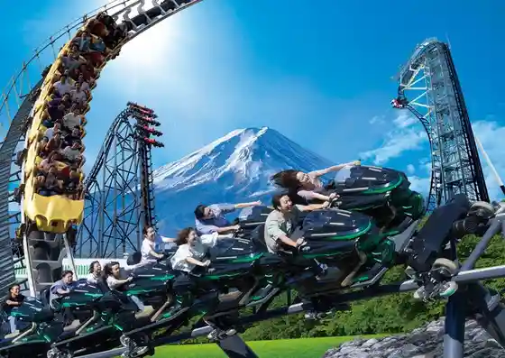
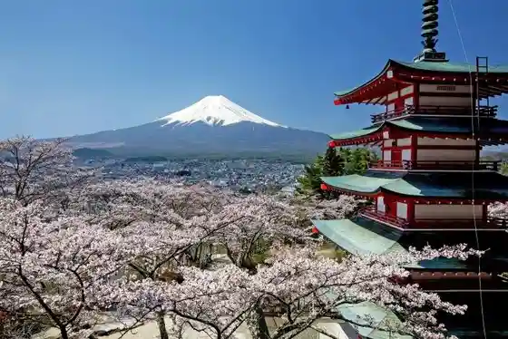
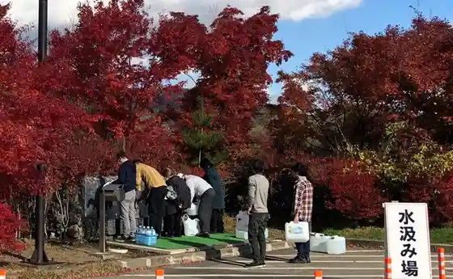
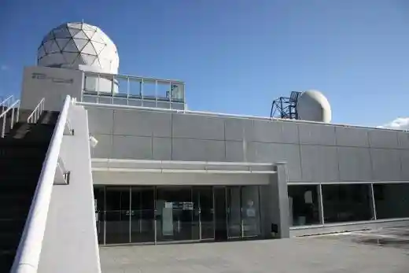

Yoshida Tainai Jukei
Fujiyoshida, Yamanashi · 0555-22-1111 · Official / source link
Fujikyu Hai Land
Fujiyoshida, Yamanashi · 0555-23-2111 · Official / source link

Niikura Yama Asama Park
Fujiyoshida, Yamanashi · 0555-21-1000 · Official / source link

Roadside Station Fujiyoshida
Fujiyoshida, Yamanashi · 0555-21-1033 · Official / source link

Fujisan Redadomu Kan
Fujiyoshida, Yamanashi · 0555-20-0223 · Official / source link

Fuji Hokuroku Park
Fujiyoshida, Yamanashi · 0555-24-3651 · Official / source link
Fujisan
Fujiyoshida, Yamanashi · 0555-22-1111 · Official / source link
Shozan Falls
Fujiyoshida, Yamanashi · 0555-21-1000 · Official / source link
Fujiyama Museum
Fujiyoshida, Yamanashi · 0555-22-8223 · Official / source link
Onshi Hayashi Garden (Fujiyoshida Soto Nike Village Onshi Kenyu Zaisan Hogo Kumiai)
Fujiyoshida, Yamanashi · 0555-22-3355 · Official / source link
no Village Park
Fujiyoshida, Yamanashi · 0555-22-1111 · Official / source link
Tsutsujiga Hara
Fujiyoshida, Yamanashi · 0555-22-1111 · Official / source link
Seibutsu Tayosei Center
Fujiyoshida, Yamanashi · 0555-72-6031 · Official / source link
Fuji Ko no O Taki Age
Fujiyoshida, Yamanashi · Official / source link
Fujisangogome Tembo Plaza
Fujiyoshida, Yamanashi · 055-223-1316 · Official / source link
Fujiyoshida Ritsu Suwa no Mori Nature Park
Fujiyoshida, Yamanashi · 0555-24-0292 · Official / source link
Yamanashiken Fujisan Kagakukenkyujo
Fujiyoshida, Yamanashi · 0555-72-6211 · Official / source link
Shakushi Yama
Fujiyoshida, Yamanashi · 0555-21-1000 · Official / source link
O Shi Kyu Togawa Ie House
Fujiyoshida, Yamanashi · Official / source link
Fujisan Museum
Fujiyoshida, Yamanashi · 0555-24-2411 · Official / source link
Kitaguchi Motomiya Fuji Asama Shrine
Fujiyoshida, Yamanashi · 0555-22-0221 · Official / source link
Fuji Sansaku Park
Fujiyoshida, Yamanashi · 0555-22-1111 · Official / source link
Fujisan Sho Ontake Shrine
Fujiyoshida, Yamanashi · 0555-72-1475 · Official / source link
Gan no Ana
Fujiyoshida, Yamanashi · 0555-21-1000 · Official / source link
Yoshida Kuchi Tozando
Fujiyoshida, Yamanashi · 0555-22-1111 · Official / source link
Hasu Ike (Mei Ken Mizumi)
Fujiyoshida, Yamanashi · 0555-22-1111 · Official / source link
Suwa no Mori Nature Park [ Fuji Painzu Park ]
Fujiyoshida, Yamanashi · 0555-24-0292 · Official / source link